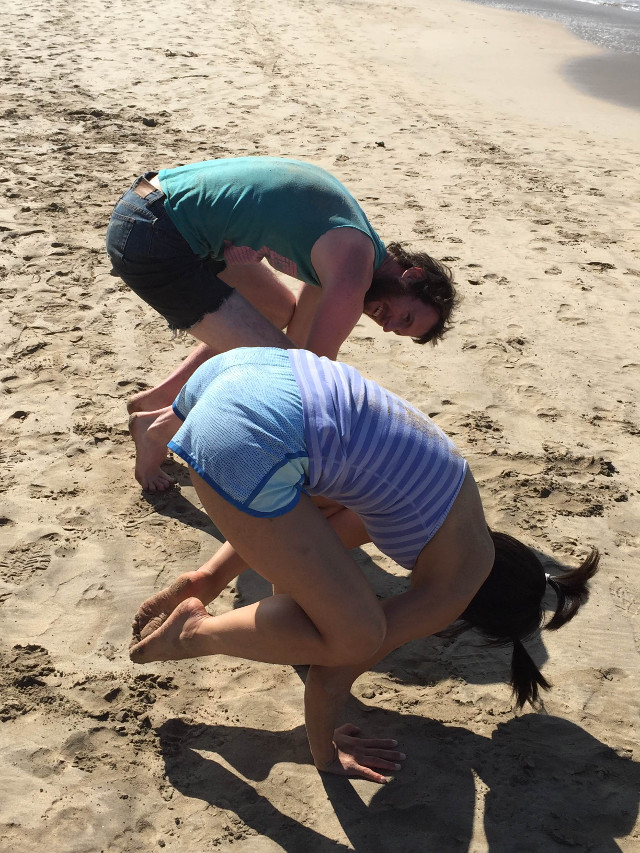

Winter Break Of Code Day 2
Because I might get sappy, here’s a picture to ease that before I let it all out.

After being promptly woken up by numerous roosters at 7:30 AM, I still can’t believe I’m here. My application was pretty last-minute, completed when I was in a state of droopiness and scholarship-application-hyperdrive. But I got on a plane from the Midwest, went from cloudy, 20 degrees with windchill making it feel like 0 to sunny, 77 degrees with mild winds making it feel still 77 degrees.
I feel like I’m still living in a dream. My previous knowledge about front-end development has been blown out of the water. I feel that my command line now is tasting all of the new commands that I have typed vigorously through it. Backbone.js is now a thing that’s not so foreign, neither is Grunt or Bower or Mustache. AND I’ve submitted my first two pull requests. EVER.
I’m currently helping out on the TextSecure Chrome Browser Extension, working on closing an issue that involves separating the phone number input into its own Backbone.js view to be rendered in multiple HTML pages and have it be validated the same way. Also involved is a third-party JavaScript library to style the drop-down in a way that is much more appealing and user-friendly.
Even though there have been a few kinks along the way, including several git resets and branch mishaps, this experience programming has definitely opened my eyes. School doesn’t teach any of what I’ve learned so far. At least not yet. Can I just graduate already?
But aside from the amazing technical experience I’ve had so far, as well as the absolutely cool people I’m surrounded with, I’ve also completed a great bucket list that I didn’t really even know that I had.
- Bathe twice a day: once in freshwater, once in saltwater.
- Wear sunscreen and a bathing suit in January.
- Try to surf once, and fail miserably at it. And then have all parts of your body hurt in the morning because of it.
- Sleep in a bunk bed.
- Walk through a souvenir shop that sells cell phone chairs. Dead serious.
- And last but not least, witness the greatest starry sky I’ve ever seen.

The starry sky really got me. Tonight we saw Venus and Jupiter, as well as constellations upon constellations, with the Milky Way faintly shimmering through the middle of the sky. The Big Dipper stood straight up, Orion almost got lost in the midst of other constellations, and Google Sky tried to help us pinpoint Uranus, but instead, we found the North Star.
It was amazing.
Here’s the other thing about this trip so far. It’s only been two full days, but it’s already pretty star quality. The creative programmers who talk protocols and details about MMS, stuff that I don’t really understand. The ingenious designers who discuss Material Design with such a passion that involves folding paper and examining shadows, all the while discussing UX with terms that I don’t really understand. The amazing chefs who lead delicious food efforts and manage to wrangle written-down recipes (or lack thereof) with an incredible knack of providing more than enough for lunch the next day, again something I don’t really understand. But that’s OK. I’m learning so much while I’m here and I know that I’ll take more than just the completed bucket list when I go back in less than a week to the bleak winter cold.
– Emily
Kauai, January 14th 2015